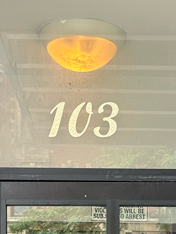
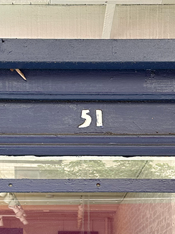
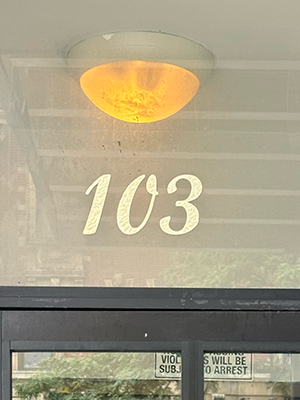
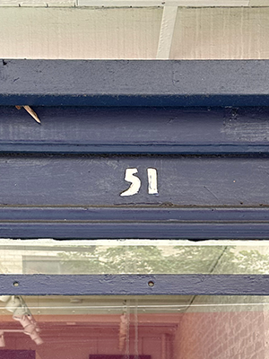
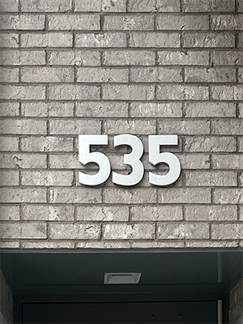
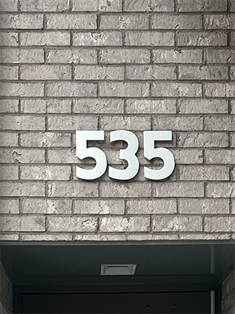

Where Numbers Rest is a book exploring house numbers and urban planning in New York City. This website reimagines the physical book in a digital format.
1 The History of House Numbers
House numbering was not introduced to make people’s orientation easier or to help foreign visitors. At a time when the modern state was taking shape, authorities were bothered with houses being cut off from the public world. A house would remain an obstacle barring tax and military authorities from systematic appropriation of the riches and resources inside unless there was a central addressing system. Even so, houses were not unaddressable before house numbers were introduced. Actually, houses did have addresses – the house names. However, these were not always evident since not every house had a plaque attached indicating its name.I
Until the late medieval period there was no great need to give the exact address of a house. In societies where most relations were based on personal acquaintanceship, a person’s name and the estimated indication of a place was all that was thought necessary to find them.II
Knowledge of a certain address therefore remained at the local level, confined to the seigneury. State authorities laying claim to the resources harbored in individual houses depended on limited information being made available with the support of seigneurial officials whose interests, how-ever, often ran counter to those of the former. Moreover, even if house names had been visible, and even if there had been a register of house names, a name-based addressing system would nonetheless have posed problems. There were many identical house names, i.e. an object targeted by state authorities might have been missed owing to the confusion of houses because of homonymy.I
IAnton Tantner, Addressing the Houses: The Introduction of House Numbering in Europe
IIAnton Tantner, House Numbers: Pictures of a Forgotten History
Though the shortest distance between two points is not a right-angled corner, New Yorkers must navigate thousands. Perhaps this is what makes New Yorkers run, rushing from loss toward gain, around corners of street walls that protect private space from the public sphere. The grid favors private interest over public convenience. The right angle prioritizes its interior space. Diagonal or non-linear routes — dirt paths through an empty lot, arching forms traversing natural typography — celebrate public space, the civic interest. A rectilinear-grid dweller moving off-axis is obliged to go out of their way, to turn corners.
Gerard Koeppel, City on a Grid: How New York Became New York
2 New York City and the Grid
Before the grid, Manhattan had hills, streams, beaches, ponds, wetlands, rock formations, and cliffs [A]. Building out the grid involved significant reshaping of the land conditions, and although traces of some of these geographical features remain visible, it is only in early prints, and especially the British Headquarters Map, that the geography of the island can be seen.
Between 1790 and 1810, Manhattan’s population tripled to just under 100,000. Driving this population growth was the port economy: during the same period, from 1790 to 1810, the value of exports from New York tripled, putting its revenues well ahead of other American ports.
The Commissioners [B] were charged in 1807 with producing a plan to structure this growth. Transferring the straight lines of the 1811 plan from paper to terrain was a demanding process.III
The planners proposed a grid for this future city stretching northward from approximately Houston Street to 155th Street in the faraway heights of Harlem [C]. It was in many respects a heartless plan. There were virtually no parks or plazas. The assumption was that people would gravitate east and west along the numbered streets to the rivers when they wanted open space and fresh air, and not spend time moving north or south. That partly explains why there were only a dozen avenues. New York property values boomed thanks to the grid, which created the real estate market. In 1965 John Reps, an urban historian at Cornell, wrote in “The Making of Urban America” that the city commissioners “were moti-vated mainly by narrow considerations of economic gain.”IV
This effort was led by John Randel, Jr. over a period of 14 years, from 1807, when the commissioners appointed him as their secretary and surveyor, to 1820, when he completed a detailed atlas of the island. His careful measuring was conducted amid protests and litigation. Randel’s surveyors were regularly obstructed, attacked, and sued for damages for cutting branches to complete their work. Randel himself was often arrested for trespassing.III
IIIMuseum of the City of New York,The Master Plan of Manhattan
IVMichael Kimmelman, The Grid at 200: Lines that Shaped Manhattan
3 Navigating the Grid
In Manhattan, streets run east and west, with the numbers ascending as they move north. The southernmost street is East 1st Street in the East Village, just north of Houston Street. The northernmost is 220th Street in Manhattan’s Inwood neighbor-hood. Farther north, in the Bronx, the street numbers go up to 263. Avenues run north and south, their numbers ascending from east to west. In much of Manhattan, First Avenue runs along the East River, while 12th Avenue, on the other side of the island, runs along the Hudson River, and is also known as the West Side Highway.
Most numbered streets begin with an “East” or “West” signifier, which tells you whether you’re east or west of Fifth Avenue in Manhattan. South of 8th Street, the east and west separator is Broadway, which complicates things by snaking through Manhattan with no respect for the rules.
Odd-numbered streets run west, while even-numbered streets run east. Odd-numbered buildings can be found on the north side of a street, even-numbered on the south,V both ascending in the same direction. Each block of a street between two major avenues was assigned a set of 100 numbers. The addresses on the block between Fifth and Sixth Avenues, for example, took the numbers 1 through 99; between Sixth and Seventh Avenues, 100-199; and so on.
Not all address numbers are set in stone, though, as borough presidents have the power to renumber buildings. In the 1980s, with the blessing of future mayor David Dinkins, so-called “vanity” addresses became popular among Manhattan developers. The mundane 111 East 45th Street, 164 West 66th Street and 470 Eighth Avenue, to cite three such metamorphoses, became the more presti-gious 237 Park Avenue [D], 3 Lincoln Center [E] and 12 Penn Plaza [F], respectively.VI
VNYC Streets: How Manhattan Streets and Avenues Are Numbered
VIKeith Williams, Manhattan’s Confusing Avenue Addresses
4 Brooklyn and Queens
As sailmakers, seamstresses, and sugar refiners increasingly crowded these hills [G] — and their names filled the pages of the growing Brooklyn City Directory — developers and homeowners were free to pick their own street numbers for their buildings. These unregulated numbers, combined with duplicated street names, had long made wayfinding in Brooklyn an annoyance, but rapid growth turned the problem into a nightmare. The confusion about both street names and numbers was far from comical, as basic government services like package delivery and police response suffered. The lack of attention and haphazard planning, which occurred disproportionately in poor areas, often Black and Irish neighborhoods, reflected who counted and who didn’t. In predominantly Black neighborhoods, street numbers sometimes didn’t even exist. Then, in 1869, the Renumbering Committee came up with a plan to renumber each block in ascending order, remove duplicate numbers and fractional numbers, and reserve an adequate store of numbers for empty lots. The plan was simple in theory but an enor-mous undertaking: Almost every building would change its number. The committee also determined a list of 75 streets whose names would be changed. Brooklyn never really solved the problem of how to reserve enough whole-number addresses on each block to accommodate future construction, fractional numbers returned on many streets after the renumbering. Today, Brooklyn has the most addresses that end in “A” or “½” of New York City’s five boroughs [H].VII
Queens was formerly occupied by about 60 villages, each having its own separate system of street names and house numbers. These villages were connected by country roads. Continuity in the street plan was found in only two sections. In 1911, when he was first elected President of Queens Borough, Maurice E. Connolly commissioned the Topographical Bureau to make a thorough study of the problem of connecting these divergent street systems, of widening and straightening the old highways, and of assigning to the streets appropriate names, such as would indicate the portion of the borough in which the highway was located. The change involved the adoption of a numbering system where the term “Avenue” was used to designate highways running east and west, while the word “Street” was employed for those going north and south, or at right angles to the avenues. Streets were numbered consecutively, starting with First Street and finishing with 271st Street. The avenues were also numbered serially, starting with 1st Avenue and ending with 162nd Avenue. The number is divided into two parts, separated by a dash, where the first part of the number is the same as that of the nearest cross street or avenue, intersecting the avenue or street to the west or north, and the second part of the number represents the distance, as expressed in lot intervals, between such corner and the house, a number being assigned for each 20-foot space [I]. Odd numbers are assigned to buildings on the north sides of avenues and the east sides of streets, while even numbers are for houses on the south sides of avenues and the west sides of streets; where the term “street” designates all roads running north and south, and “avenue” refers to roads running east to west or at right angles to the streets.VIII
VIIJeremy Lechtzin,Brooklyn’s Big Street Address Mess
VIIICharles U. Powell, Bringing Order Out of Chaos in Street Naming and House Numbering
5 The Art of House Numbers
(a) The Borough President is empowered to establish and enforce rules and regulations on the size, visibility and location of house numbers.
(b) All house numbers shall be at least 5 inches in height and may be metal, metal foil, glass, plastic, wood or paint in composition; where such house numbers are displayed in paint, such numbers shall bear an even and uniform 5/8” stroke.
(c) All house numbers shall be located at either of the following locations:
(1) On the front wall of the building, within two (2) feet of the knob side of the door and minimum four (4) feet from the bottom thereof nor at a height greater than the height of the door; or
(2) On the front wall of the building above the door, at the center line of the opening and within two (2) feet of the height of the door; or
(3) Where an entrance door is recessed in excess of three (3) feet from the building line, the house numbers shall be placed on the front wall of the building nearest the front entrance; and
(4) Such other locations on the front of the building as may be approved by the Office of the Borough President.
(5) The term “front” shall mean the side of the building which faces the street on which numbers have been assigned.
(d) All owners, agents, lessees or other persons in charge of buildings to which house numbers have been assigned be responsible for the conspicuous display of such numbers, so that they may at all times be plainly legible from the sidewalk.
(e) Failure to comply with these Rules and Regulations and the Administrative Code applicable thereto, shall subject the owner, lessee, agent or other person in charge of any building to the penalties provided for in the Administrative Code.IX
IXAmerican Legal Publishing, 3-01 house number specifications.
A report conducted in 2010 by the Manhattan borough president at the time revealed that along over a dozen of the city’s busiest corridors, almost 40 percent of the buildings lacked clear addresses displays. Under the old law, fines were relatively modest: $25 a day for the first offense, and $5 a day for every day until it was rectified. Now the fines would rise to $250 for the first offense and $50 a day until an address number was installed. Enforcement for residential buildings has long been handled by the city’s Dept. of Housing Preservation and Development, but enforcement for commercial buildings isn’t defined, so a second bill is being drafted to determine which agency will assume that responsibility.
Sarah Maslin Nir, No Address on That New York Building? The Fine May Be Going Up
6 Other Cities and their Grids
Tulsa, Oklahoma is based on a grid with the basic line Main Street running north and south and the Frisco tracks running east and west. All the streets east of Main are named in alphabetical order for cities of the United States situated east of the Mississippi — Boston, Cincinnati, Detroit, Elgin, etc.; while all those lying west of Main are named for western cities — also alphabetically, such as Boulder, Cheyenne, Denver, etc. All the streets south of the Frisco tracks are named numerically in sequence — 1st, 2nd, 3rd, etc., while those north of the tracks are named after prominent Indians or pioneer citizens and arranged alphabetically — Archer, Brady, Cameron, and others. In all parts of the city, the house numbers start with the even hundred at each corner.X
In Vietnam, street numbers are typically shown on blue rectangular plates, often listing the full address in the order: house number, street, ward, district, and city [J]. The design reflects the traditional style of hand-painted signs in Vietnam, with elements of French influence as well [K]. These house number are mounted either above or beside the door.XI
In India, there is a common practice of where house numbers are displayed along with the family’s last name, often with the last name being more prominent. The custom varies by region, with some areas emphasizing it more than others.XI
In Venezuela, houses are identified by names instead of numbers. These are displayed near the entrance, with the letters laser-cut from metal. Homeowners choose the names, which are then registered with the government [L].XI
XA.P.A, Street Naming and House Numbering Systems
XIPersonal interview
1
2
3
4
5
6
7
8
9
10
11
12
13
14
15
16
17
18
19
20
21
22
23
24
25
26
27
28
29
30
31
32
33
34
35
36
37
38
39
40
41
42
222 E 27th St
145 E 19th St
74 5th Ave
225 E 12th St
140 E 13th St
135 2nd Ave
103 2nd Ave
221 E 5th St
48 Bond St
1 E 2nd St
165 Crosby St
131 Crosby St
115 ½ Crosby St
51 Prince St
236 Elizabeth St
241 Lafayette St
64 Spring St
221 Mott St
216 Bowery
58 Rivington St
141 E Houston St
22 E 8th St
237 Thompson St
548 LaGuardia Pl
223 Sullivan St
23 Christopher St
87 Christopher St
340a W 11th St
699 Washington St
41 Grove St
41 Commerce St
299 W Houston St
74 King St
535 Greenwich St
325 Hudson St
23 Charlton St
191 Prince St
131 Prince St
125 Wooster St
115 Spring St
381 Broadway
108 Franklin St


 




 
